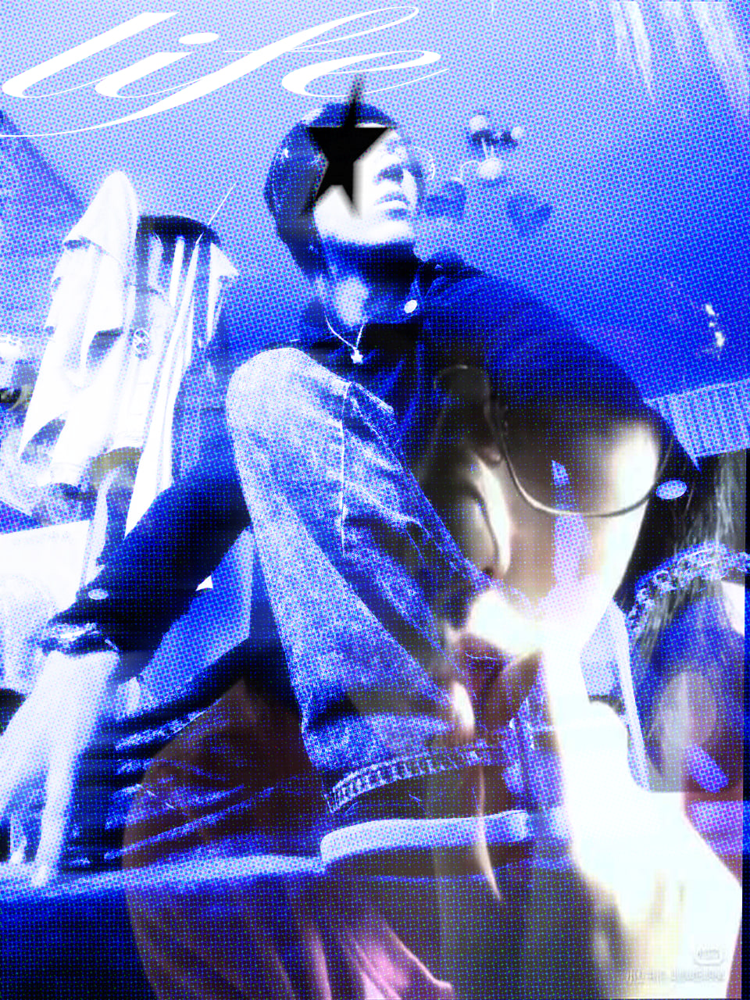
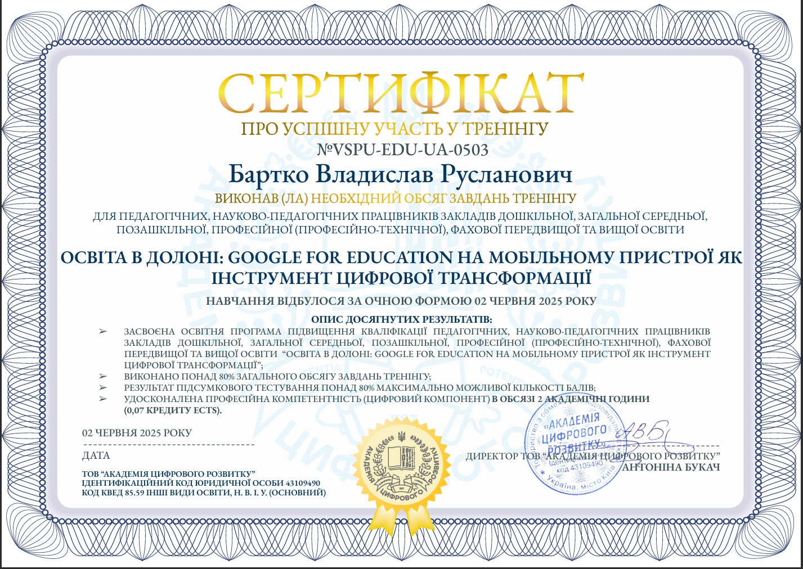
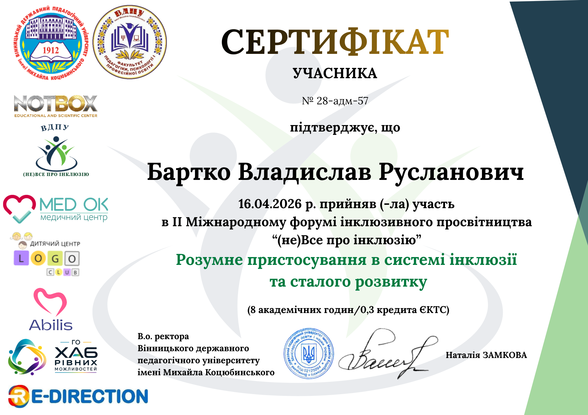
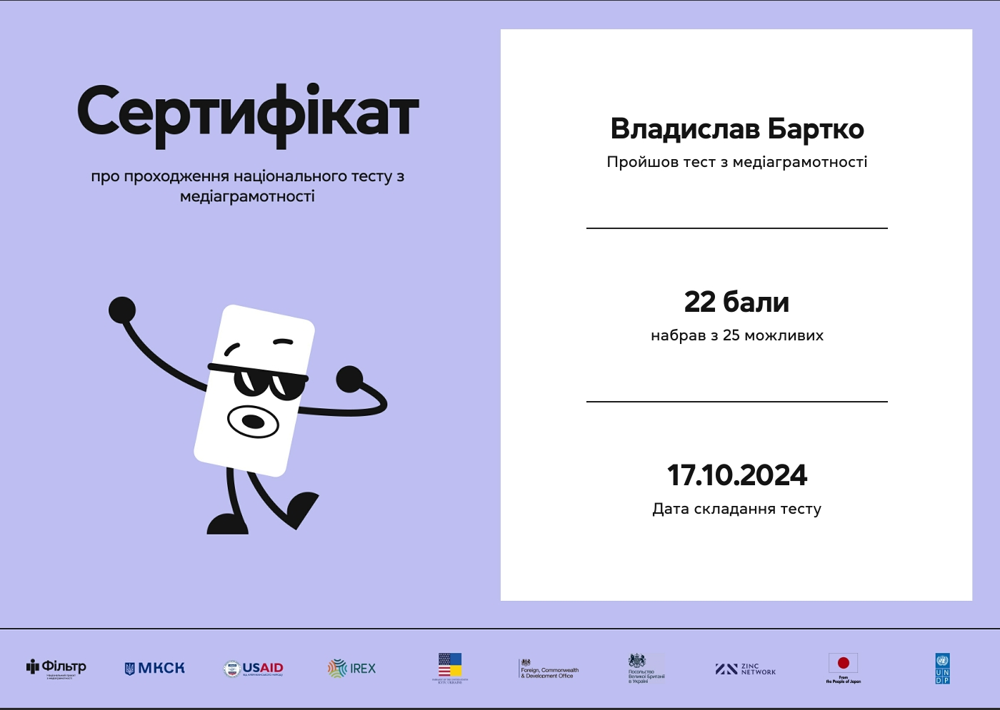

Про мене

Вітаю!
Мене звати Бартко Владислав Русланович. Я майбутній вчитель інформатики.
Народився у місті Хмільник, Вінницька область. Зараз навчаюсь у Вінницькому державному педагогічному університеті ім. Михайла Коцюбинського на 3-му курсі, спеціальності 015.39 (Цифрові технології)
На своїх уроках я буду намагатися зробити навчання зрозумілим та цікавим. Учні виконують практичні завдання, працюють із програмами, створюють власні проєкти та вчаться безпечно користуватися Інтернетом.
Моя мета - допомогти кожному учневі отримати корисні цифрові навички, які знадобляться йому не тільки в школі, а й у повсякденному житті.
Мої досягнення
Сертифікати та підтвердження моєї участі в освітніх заходах і професійного розвитку.


